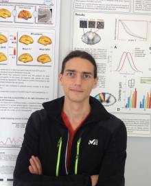

Gabriel Mangeat#
About#

B.Sc., Engineering Physics
M.A.Sc. Candidate, Biomedical Engineering
I’m a masters student working in MRI analysis of the human brain. I’ve been mainly focusing on:
ultra high field MRI (7 Tesla T2*) and magnetization transfer (3 Tesla MTR) to study the myelo-architecture of the Human cortex
mathematical model to combine MRI contrasts in order to gain in specificity in myelin detection
application of the model in cohort of multiple sclerosis (MS) patients
adaptation of the model to study early MS patients, by combining two ultra high field quantitative contrasts (7 Tesla T2* and 7 Tesla T1)
Study of the Human connectomics applied to MS, and study of the link between myelin loss and connectomics alterations
Publications #
Journal Articles#
2016 #
G. Mangeat, R. Ouellette, C.A. Treaba, T. Granberg, E. Herranz, C. Louapre, N. Stikov, J.A. Sloane, E.C. Klawiter, C. Mainero, J. Cohen-Adad, “Association between cortical demyelination and structural connectomics in early multiple sclerosis”, (2016), ISMRM, (International Society for Magnetic Resonance in Medicine), Submitted.
This study explores the interplay between the cortical variations of myelin and the graph abnormalities of the patient’s neuronal networks; by combining the mathematical model described below and tools of the Graph Theory applied on subject’s tractographs.
E. Herranz, C. Giannì, C. Louapre, C.A. Treaba, S.T. Govindarajan, G. Mangeat, R. Ouellette, M.L. Loggia, N. Ward, E.C. Klawiter, J.A. Sloane, C. Catana, J.M. Hooker, R.P. Kinkel, C. Mainero, “The neuroinflammatory component of gray matter pathology in multiple sclerosis by in vivo combined 11C-PBR28 MR-PET and 7T imaging”, (2016), ISMRM, Submitted.
2015 #

G. Mangeat, S.T. Govindarajan, C. Mainero, J. Cohen-Adad, “Multivariate combination of magnetization transfer, T2* and B0 orientation to study the myelo-architecture of the in vivo human cortex”, Neuroimage, 2015. NOTE: This article made the cover of the Issue.
This study presents the mathematical model developed to combine several myelin-sensitives metrics and extract a mapping specific to the cortical myelo-architecture. Neuroimage
G. Mangeat, S.T. Govindarajan, R.P. Kinkel, C. Mainero, J. Cohen-Adad, “Multivariate combination of magnetization transfer ratio and quantitative T2* to detect subpial demyelination in multiple sclerosis”, 2015, ISMRM. Oral presentation. NOTE: ISMRM Merit Award.
This study is a direct application of the mathematical model (see above) to study the pathological demyelination in a cohort of MS patients.
mangeat_ismrm_2015_abstract.pdf
G. Mangeat, C. Louapre, E. Herranz, C.A. Treaba, R. Ouellette, J.A. Sloane, E.C. Klawiter, J. Cohen-Adad, C. Mainero, “Multivariate combination of quantitative T2* and T1 at 7T MRI detects in vivo subpial demyelination in the early stages of MS”, 2015, ECTRIMS (European Committee for Treatment and Research in Multiple Sclerosis). Poster presentation. doi: 10.1177/1352458515602642. NOTE: Travel Grant
This study is another application of the combination of metric performed in a group of early MS patients, for which the cortical myelin variations are even more challenging to detect. mangeat_ectrims_2015_p957.pdf
E. Herranz, C. Giannì, C. Louapre, G. Mangeat, M. Loggia, C.A. Treaba, S.T. Govindarajan, N. Ward, J.A. Sloane, E.C. Klawiter, R. Ouellette, C. Catana, J.M. Hooker, R.P. Kinkel, C. Mainero, “11C-PBR28 MR-PET imaging detects in vivo diffuse inflammation in cortex, deep gray and normal appearing white matter associated with neurodegeneration and clinical disability”, 2015, ECTRIMS. NOTE: Travel Grant
2014 #
G. Mangeat, S.T. Govindarajan, C. Mainero, J. Cohen-Adad, “Comparison between 7T T2* and 3T MTR in the in vivo human cortex”, 2014, ISMRM. Poster presentation. NOTE: Student Grant
This study compares the response of T2* and MTR to the cortical variations of myelin. The goal is to assess their complementarity in term of myelin-related signal.
mangeat_2014_ismrm_abstract.pdf
mangeat_2014_ismrm_poster_1783.pdf
2013 #
G. Mangeat, S.T. Govindarajan, R.P. Kinkel, C. Mainero, J. Cohen-Adad, “MTR and T2* analysis of subpial demyelination”, 2013, ECTRIMS. Poster presentation. doi: 10.1177/1352458513502429.
This study aims to investigate the potential of 7T T2* and 3T MTR to detect subpial demyelination in MS. mangeat_2013_ectrims_poster.pdf